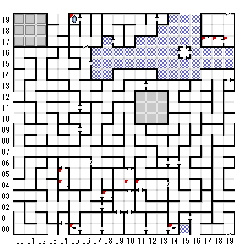

【 x：4，y：5 】
目の前に、燦然と光り輝く彫像があり
その手がこちらに差し出されている
片方の手には、光り輝く水晶の球が握られ
もう一方の手には何もない
【 x：4，y：4 】
彫像の前に辿り着いた
捜しますか
XENOが出てきて戦闘
【 x：5，y：19 】
１F（0,0）へ
【 x：5，y：0 】
4Fから
【 x：8，y：3 】
さらばだ、汝の道程の易からんことを！
【 x：10，y：4 】
ル・ケブレス
なにをしても打ち消されてしまう
NEUTRAL CRYSTALを持っていると通れる。
（GOODとEVILのCRYSTALをスペシャルパワーで合成する
中立のキャラでやると消えるだけで体力も減らされる）
【 x：11，y：4 】
私が転がれば、そなたは進みぬ
私が動けばそなたも動く
私は何？
wheele
【 x：14，y：0 】
５Fへ
【 x：17，y：17 】
彫像の前に辿り着いた
捜しますか
＊＊は品物を渡した
？SPHRE CRYSTAL
（ORB of EARITHIN）
【 x：18，y：17 】
目の前に、燦然と光り輝く彫像があり
その手がこちらに差し出されている
片方の手には、光り輝く水晶の球が握られ
もう一方の手には何もない
【 x：19，y：17 】
カードは何
DEATH